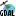
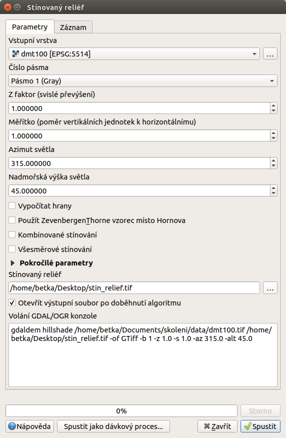
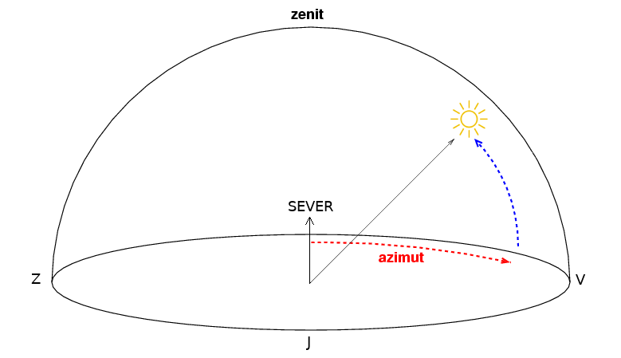
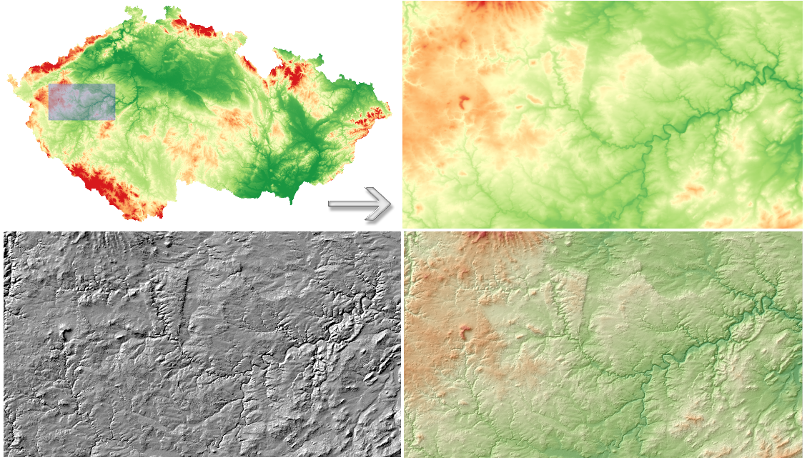

Digitální výškový model terénu je užitečný typ dat, ze kterého je
možné odvodit další informace o daném území a tak lépe vystihnout
charakter zkoumaného území. Nástroje pro terénní analýzy a
vizualizace terénu jsou dostupné z menu Rastr ‣
Analýza. Pomocí těchto nástrojů můžeme odvodit datové sady, které nebyly
úplně evidentní z původního rastru výškopisu. Může jít například o
odvození sklonu reliéfu nebo orientaci svahu vůči světovým stranám.
Funkce nemají samostatné ikony, ale pouze ikonu skupiny nástrojů poskytovatele
-GDAL. U všech níže uvedených nástrojů je v okně vidět náhled na zápis
použití této funkce s nastavením všech použitých parametrů. Je vidět, že u
všech analýz se používá jedna funce - gdaldem a samotný typ výpočtu je určen
až dál. Zároveň je to jednoduchý postup, jak se naučit používat funkce ne
pomocí grafického okna, ale pomocí příkazů.
Poznámka
Nástrojová lišta Rastr obsahuje kromě možnosti vykonávat terénní
analýzy i nástroje týkající se mapové algebry, souřadnicových systémů,
konverze do jiných formátů, ořezávání rastrů, generování vrstevnic a jiné.
Jak již bylo uvedeno v části o nastavení transparentnosti rastrových
dat, stínovaný reliéf je využívanou rastrovou vrstvou při zobrazování
2D dat reprezentujících 3D jevy, protože s jeho pomocí se dá dosáhnout
prostorového efektu. Abstraktní informace o výšce terénu znázorníme
pomocí rastrové vrstvy stínovaného reliéfu, tzv. hillshade. Ten
vytvoříme tak, že z nabídky menu vybereme Rastr ‣
Analýza ‣ Stínovaný reliéf…. V dialogovém okně nastavíme název a
cestu ke vstupní (dmt.tif) a výstupní rastrové vrstvě
(hillshade.tif). Při volbě výstupního souboru je možné vybrat
i formát do kterého bude výpočet uložen. Předvolené nastavení všech
ostatních parametrů lze označit za "standardní". Při zatrhnuté
možnosti Otevřít výstupní soubor po doběhnutí
algoritmu je možné výpočet spustit pomocí tlačítka OK a
výstup se po ukončení přidá do mapového okna.

Obr. 150 Nastavení funkce pro výpočet stínovaného reliéfu.¶
Poznámka pro pokročilé
V rámci možností režimu vytváření stínovaného reliéfu je možné nastavit
hodnotu svislého převýšení, poměr svislých a vodorovných jednotek, azimut či
nadmořskou výšku světla.

Obr. 151 Určení azimutu a nadmořské výšky světla pro výpočet.¶
Pokud chceme zvýraznit výškové poměry částí terénu, tak použijeme nastavení
Z faktor a nastavíme toto číslo na hodnotu vyšší než 1. (Hodnota 2 například
způsobí že pokud byl výškový rozdíl při hodnotě 1 40 výškových metrů, tak
bude tento rozdíl působit jako 80 výškových metrů.)
Dalším parametrem je přeputí způsobu výpočtu z výchozíno Hornova na tzv.
Zevenbergen-Thorne výpočet (vhodnější pro jemný terén).
Do výpočtu terénu lze také zapnout výpočet hran.
Abychom lépe viděli detaily, pomocí Přiblížit
si ohraničíme část území. Následně způsobem, který byl popsaný výše,
nastavíme všeobecnou transparentnost rastrové vrstvy hillshade
na hodnotu 60%. Dostaneme výsledek znázorněný na
Obr. 152.

Obr. 152 Vytvoření prostorového efektu dat díky stínovanému reliéfu.¶
Poznámka
Rastrová vrstva stínovaného reliéfu je v menu Vrstvy nad vrstvou
dmt.tif. Je možné udělat i opačné pořadí vrstev - hillshade
ponechat jako podklad a nastavit transparentnost digitálního výškového modelu
terénu.
Jednou z užitečných informací o terénu je i sklon, který představuje maximální
změnu (gradient) výšky mezi sousedními buňky rastru. Rastrovou vrstvu sklonu
vygenerujeme pomocí nástroje z Rastr ‣ Analýza ‣ Sklon…
Na Obr. 153 je znázorněný výsledek s barevnou paletou BrBG, přičemž je
použité rozdělení do 10 stejných intervalů.
Jako pokročilé nastavení je možné dělat výpočet v procentech místo výchozích
stupňů. Pokud bychom měli jenom rastr se sklony a potřebovali bychom převést
hodnoty na procenta, tak bychom mohli použít rastrový kalkulátor.
Pro vytvoření mapy orientace svahu vůči světovým stranám použijeme
nástroj Rastr ‣ Analýza ‣ Aspekt… a postupujeme
obdobně jako při předchozích analýzách.
U výchozího nastavení se orientace určuje azimutem ve stupních. Pomocí parametru
je možné určovat ji jako trigonometrický úhel.
Místa, které jsou vodorovné nemají žádnou orientaci a standardně se jim přiřadí
hodnota -9999. Pro přiřazení hodnoty 0 je k dispozici opět samostatný
parametr. Toto nastavení je důležité z hlediska vizualizace, ale i navazujících
výpočtů.
Orientace svahu je ve stupních, přičemž server má hodnotu 45°.
Severní strana má tedy rozsah 0°-90°. Jižní strana pak 180°-270°.
{kind=link}
 Otevřít výstupní soubor po doběhnutí
algoritmu je možné výpočet spustit pomocí tlačítka OK a
výstup se po ukončení přidá do mapového okna.
Otevřít výstupní soubor po doběhnutí
algoritmu je možné výpočet spustit pomocí tlačítka OK a
výstup se po ukončení přidá do mapového okna. Přiblížit
si ohraničíme část území. Následně způsobem, který byl popsaný výše,
nastavíme všeobecnou transparentnost rastrové vrstvy hillshade
na hodnotu 60%. Dostaneme výsledek znázorněný na
Obr. 152.
Přiblížit
si ohraničíme část území. Následně způsobem, který byl popsaný výše,
nastavíme všeobecnou transparentnost rastrové vrstvy hillshade
na hodnotu 60%. Dostaneme výsledek znázorněný na
Obr. 152.